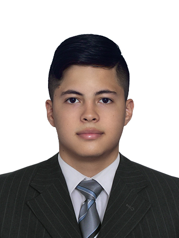

Gustavo Adolfo
Valencia Jurado
Descripción Personal
Me considero una persona responsable, dinámica y positiva, con aspiraciones y metas basadas en el
logro de los objetivos; aprendo con rapidez y me intereso por cumplir de manera adecuada con la
puntualidad, la honestidad y la responsabilidad en las distintas actividades que se me asignen, gran
sentido de colaboración y pertenencia, con fácil adaptación al cambio, sociable y con deseo de
superación constante.
Educación
Educación Básica Primaria
Liceo Risas Infantiles, Santiago de Cali, Colombia, 2013
Bachiller Técnico (Especialidad en comercio)
Camilo Terreros, Santiago de Cali, Colombia, 2019
Técnico en Asistencia Administrativa
SENA, Guadalajara de Buga, 2019
Tecnología en Electrónica
Universidad del Valle, Sede Meléndez, Santiago de Cali, Colombia, Febrero 2020-Actualmente en formación, 4to semestre
Experiencia Laboral
Auxiliar de Cocina
The Big Burger, Santiago Cali, Colombia, Noviembre 2016-Enero 2020
Skills
Contabilidad Básica
Inglés - Avanzado
Resolución de conflictos
Sistemas embebidos
Gestión de tiempo
Hobbies
Me gusta mucho ver películas por las noches y jugar videojuegos con mis amigos, los fines de semana me gusta hacer deporte por la mañana y por la noche hago de cenar platos deliciosos.
¿Por qué quiero ser desarrollador Web Full Stack?
En la universidad tuve la oportunidad de aprender cosas muy básicas de Python, desde ese momento la programación me llamó la atención, a medida que avanzaba en mi carrera en electrónica, mi interés por la programación creció, por lo que decidí dejar la carrera para así explorar aún mas este mundo de la programación. Esta carrera me ha llamado la atención porque explora mis gustos con la tecnología, la creatividad y la ingeniería de software, deseo con muchas ansias hacer esta carrera con mucha pasión y actitud, se me hace una carrera con retos muy interesantes y tendré muchas ganas de superar estos retos, al final de la carrera quiero ser una persona muy preparada en el tema y con mucha disposición de aplicar todo lo aprendido en problemas de la vida real.